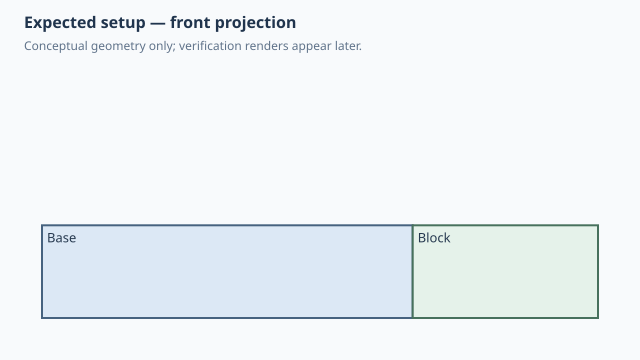

← Qualification / Face anchor follows parent geometry
Forge qualification case
NOT RUNQ1 Q2 documented
Face anchor follows parent geometry
1. Test setup

Test goal
Verify that a standard face anchor remains tied to changing parent topology.
Pass criteria
The attached block stays on the parent's right face.
Mutation criterion
Change base_width from 40 to 80 mm in the saved design; the block follows the moved RIGHT face.
2. Implementation under test
Fixture source
class Base:
width = 40.0
def build(self):
return Box(self.width, 30, 10)
class Block:
def build(self):
return Box(20, 20, 10)
class ParametricAnchor:
base_width = 40.0
def build(self):
base = Base(width=self.base_width)
block = Block().attach(
base,
parent=Anchor.RIGHT,
child=Anchor.LEFT,
)
return base + block
ParametricAnchor()
Public Forge API used
Anchor.RIGHT / Anchor.LEFT with parent parameter propagation
Forge model represented by this fixture
The attachment references the parent's semantic RIGHT face, not a frozen absolute X coordinate.
3. Generated SolidCraft relationship
joint.create uses a native face reference derived from the parent occurrence; the parent width remains a SolidCraft parameter.
Show generated relationship / command details
[
{
"command": "joint.create",
"params": {
"type": "rigid",
"name": "Attach Block:1 to Base:1",
"a": {
"occurrence": "Base:1",
"face": [
20.0,
0.0,
5.0
]
},
"b": {
"occurrence": "Block:1",
"face": [
20.0,
0.0,
5.0
]
}
}
}
]3. Results
Native result data was not supplied to this site build. Run the native qualification for measured results.
No source-matched native verification was supplied to this site build. The case sheet and command contract are still shown.
6. Evidence and references
Raw evidence
Show generated files and measurements
Reference models
These comparisons clarify concepts; Forge does not promise API compatibility with them.
- BOSL2: BOSL2 cardinal anchors similarly express a meaningful side of the parent instead of an absolute coordinate.